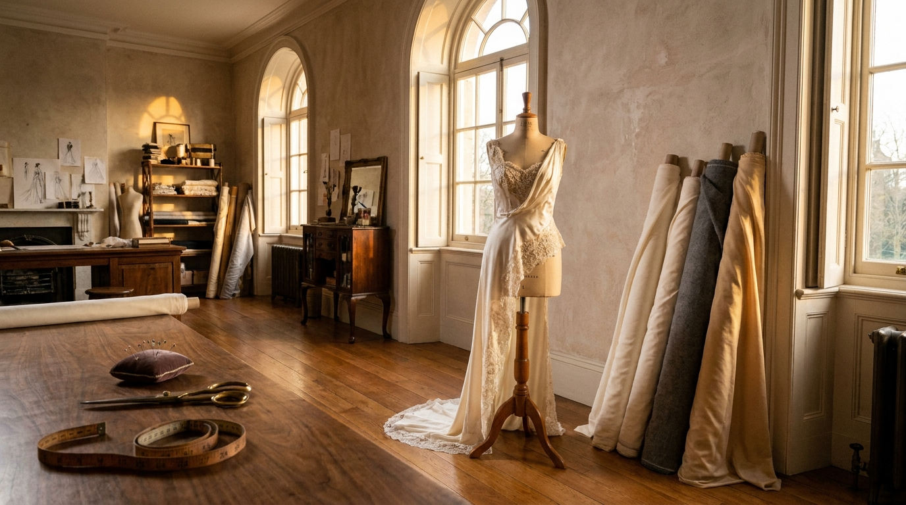
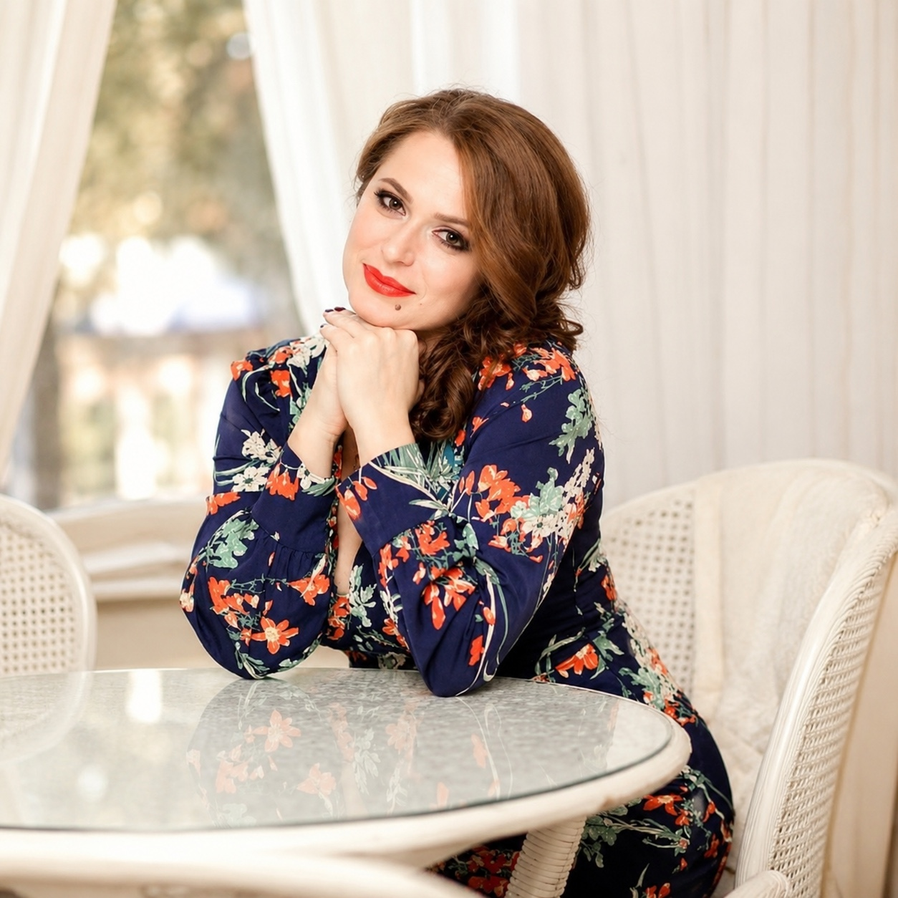
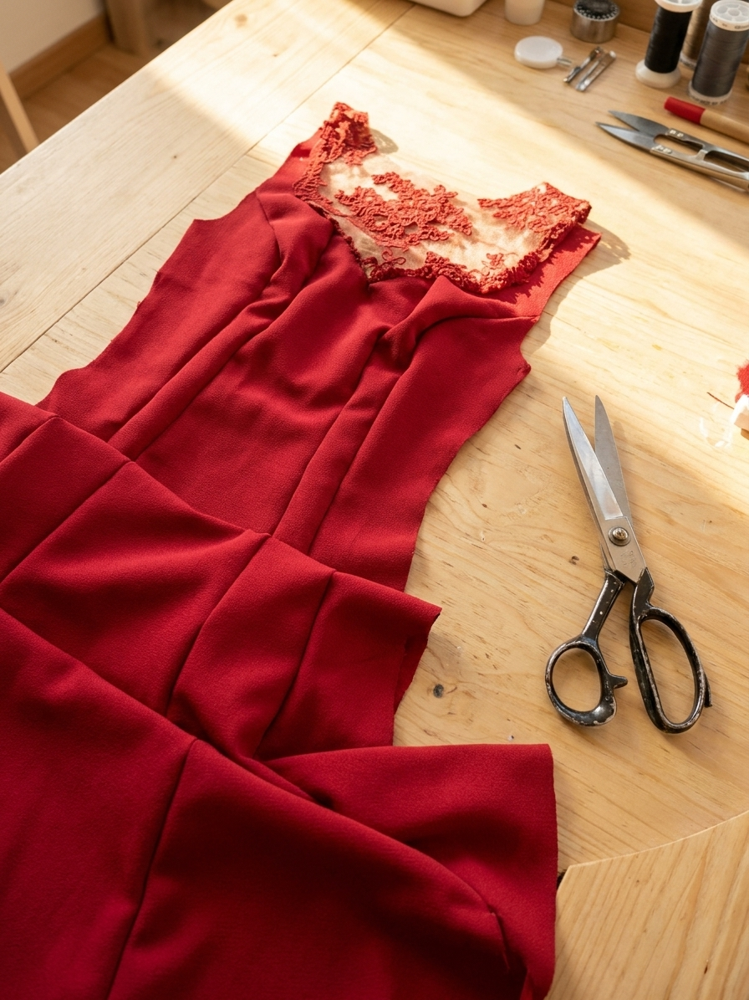
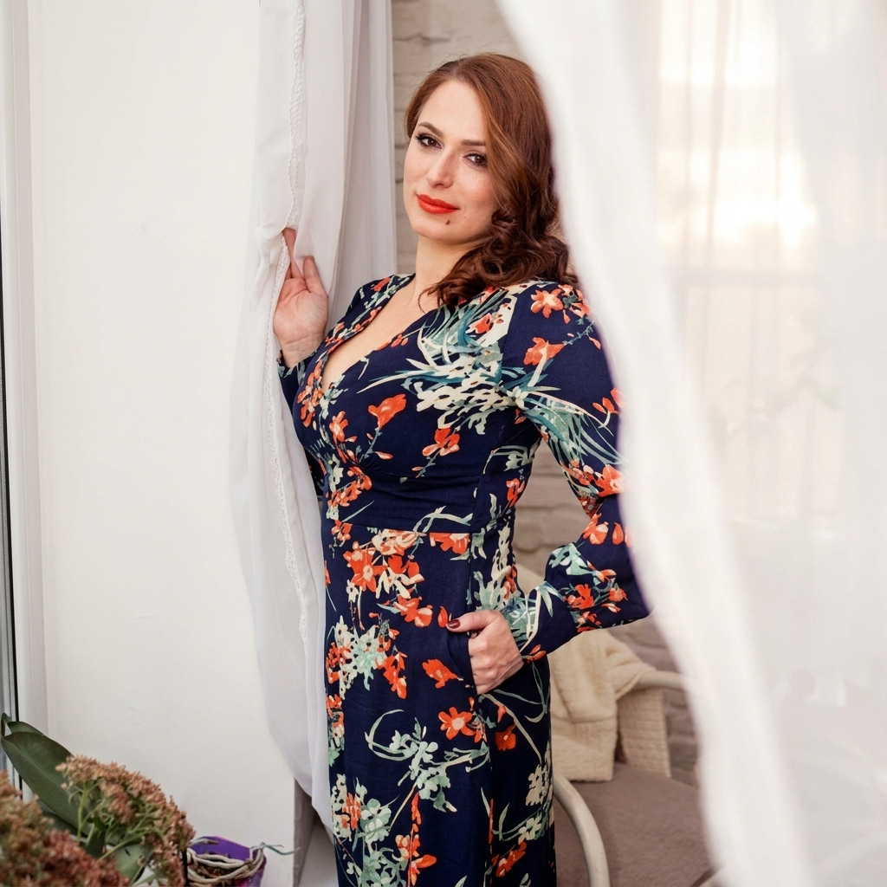

Авторська майстерня
VERBA
Створення вишуканого одягу за індивідуальними мірками високого рівня. З ідеальною посадкою

Тетяна Верба
Засновник
Портфоліо
Три напрямки нашої роботи
Оберіть категорію, щоб переглянути приклади робіт та надихнутися для власного образу.
Жіночий гардероб
Весільні, коктейльні та вечірні сукні
Діловий одяг
Сукні, костюми, брюки, спідниці
Чоловічий гардероб
Класичні чоловічі костюми. Пальта, піджаки та брюки.
Послуги
Одяг, створений персонально для вас - від ідеї до останнього стібка
Кожна деталь узгоджується з вами особисто - від тканини до фінальної примірки.
Наші роботиЖіночий гардероб
Вечірні, випускні та весільні сукні в єдиному екземплярі. Класичні ділові костюми, брюки, спідниці та блузи. Ексклюзивні пальта й куртки, повсякденний та спортивний одяг.
Чоловічий гардероб
Класичні чоловічі костюми. Елегантні пальта, піджаки та брюки, пошиті за індивідуальними мірками з увагою до кожної деталі.
Спеціальні та корпоративні замовлення
Бальні та сценічні костюми. Корпоративний одяг преміум-класу - для персоналу готелів, ресторанів та медичних закладів.
Коктейльна сукня
Напівофіційне вбрання для вечірок, презентацій, весільних прийомів чи святкувань у ресторані. Довжина міді або до коліна - витончений баланс між розкішшю вечірньої сукні та повсякденністю.

Наступний крок
Готові створити свою історію?
Напишіть нам у Telegram або WhatsApp - і ми зв'яжемось з вами для першої консультації протягом дня.
Про нас
Ми шиємо не просто одяг - ми створюємо ваші особисті історії успіху.
Засновниця та головний дизайнер-модельєр бренду VERBA Тетяна Верба створює одяг з 2003 року. Побудувавши понад 20-річну історію бренду в Україні, сьогодні Тетяна розвиває VERBA в Німеччині - індивідуальні візити, зустрічі в затишній камерній майстерні або онлайн. Повний цикл: від ідеї, ескізу та авторського конструювання - до крою, примірок і бездоганного пошиття.
20+
років досвіду
17
фахівців в Україні
10
фахівців у Німеччині

Тетяна Верба
Модельєр
Наш внесок у перемогу України 🇺🇦
Під час війни команда VERBA шила тактичне спорядження та військову форму для українських захисників, поєднуючи професійну майстерність із підтримкою тих, хто захищає країну.
Як ми працюємо
Процес, що гнучко адаптується під вас
Прозорий процес на кожному етапі - від першого кроку до фінального стібка.
Обговорити ваш проєктКонсультація та концепція
Обговорюємо фасон, тканини та деталі. Ви можете прийти з власним баченням чи фото - або ми розробимо образ з нуля відповідно до ваших побажань.
Зняття мірок
Особиста зустріч або онлайн-консультація, де ми даємо прості та точні інструкції, як легко зняти мірки самостійно.
Примірка та підгонка
Для лаконічних фасонів - швидка звірка по фото чи відео. Для складного крою - примірка поштою з детальною фото- та відеозвіркою посадки.
Готовий результат
Ви отримуєте виріб з бездоганною посадкою. Рівень обробки - на ваш вибір: від охайного класичного до кутюрного, з натуральним шовком, мереживом і персональною вишивкою.
Потрібно терміново?
Можливе виготовлення поза чергою, якщо вбрання потрібне під конкретну подію (з доплатою за терміновість).
Не можете приїхати?
Концепцію й тканини узгоджуємо дистанційно, а Тетяна Верба особисто приїжджає до вас для примірок (за умови покриття дорожніх витрат).
Відгуки
Історії, які надихають нас продовжувати
«Тетяна почула саме те, що я хотіла сказати без слів. Сукня стала моєю другою шкірою.»
Олена, клієнтка
«Костюм від VERBA сидить так, ніби його виточили під мене. Цей рівень відчувається одразу.»
Максим, клієнт
«Це не просто пошиття. Це турбота, час і щирість на кожному етапі.»
Юлія, клієнтка
FAQ
Питання, які нам ставлять найчастіше
Скільки триває виготовлення одягу?
Виготовлення однієї речі може займати від кількох годин до кількох тижнів - залежно від складності. Якщо вбрання потрібне терміново, можливе виготовлення поза чергою з доплатою.
Скільки коштує індивідуальне пошиття?
Вартість залежить від рівня внутрішньої обробки, складності крою та деталізації - тому кожен проєкт ми обговорюємо індивідуально.
Як відбувається перший контакт?
Для швидкості й зручності спілкування різними мовами перший контакт відбувається в Telegram або WhatsApp. Ви можете одразу надіслати фото, поставити запитання чи передати мірки.
Скільки примірок зазвичай потрібно?
Залежить від складності фасону - від однієї швидкої звірки по фото до кількох особистих або поштових примірок для складного крою.
Що робити, якщо я не можу приїхати особисто?
Ідею та тканини узгоджуємо дистанційно. За потреби Тетяна Верба особисто приїжджає до вас для примірок і підгонки - за умови покриття дорожніх витрат.
Який у вас графік роботи?
Прийом клієнтів та консультації відбуваються за попереднім записом.
Зворотній зв'язок
Розкажіть нам про свій проєкт
Напишіть нам у WhatsApp - і Тетяна Верба особисто відповість вам протягом дня.
Ви можете написати своє питання
Контакти
Завжди на зв'язку
Перший контакт відбувається у Telegram або WhatsApp - надішліть фото, запитання чи мірки, і ми відповімо протягом дня.
Telegram
@verba_studio
+380 97 376 7106
Moda-verba@ukr.net
Майстерня
Німеччина · Україна